电路原理习题册·第四章 电路定理（选择 8 / 填空 8 / 计算 5）
1. 来源与边界
来源与前三章同一本习题册。第四章占书第 19–22 页，选择 8 + 填空 8 + 计算 5，共 21 题，配图 4.1–4.16（16 张，已按图号提取入库）。三条主线：叠加定理（置零规则、受控源处理、功率不可叠加）、 戴维南定理（开路电压 + 等效电阻）、最大功率传输（、）。
2. 依赖
| 知识 | 一句话 | 在哪学的 |
|---|---|---|
| 叠加定理 | 独立源单独作用、响应代数和；受控源保留；功率不可叠加 | 第三章与本章选 1/2 |
| 戴维南定理 | 一端口 = 串 ； = 独立源置零后的端口电阻 | 第二章选 4 |
| 置零规则 | 电压源置零 = 短路；电流源置零 = 开路 | 本章选 1 |
3. 选择题
选 1
电压源置零相当于（ ）；电流源置零相当于（ ）。A. 开路 短路 B. 短路 开路 C. 视情况而定 D. 以上都不对
解答
电压源置零（）= 短路；电流源置零（）= 开路。选 B。
复盘
置零的定义就是「这个源的量恒为零」：电压恒零的两端 = 导线，电流恒零的支路 = 断开。
选 2
应用叠加定理时，关于受控源的叙述正确的是（ ）。
解答
受控源保留在各个分电路中（控制系数不变，控制量随分电路重新取值），不单独作用。选 A。
复盘
受控源不是激励，是电路自身的元件——它的值由控制量决定，而控制量在每个分电路里都不同。
选 3（图 4.1）
戴维南等效电路的开路电压和等效电阻分别为（ ）。A. 18V，3Ω B. 18V，2Ω C. 9V，3Ω D. 9V，2Ω
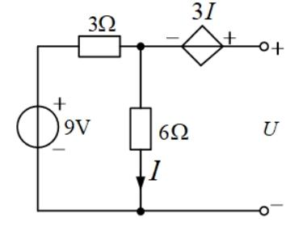
解答
开路时受控源支路无电流， 就是 6Ω 电流： V、 A； 端钮电位 V，即 。置零 9V、外施 ：、 、， → 。选 C。
复盘
含受控源求 只能走「外施电源法」，不能把受控源也置零。
选 4（图 4.2）
为使 R 获得最大功率，R 值应为（ ）Ω。A. 6 B. 4 C. 2 D. 4/3
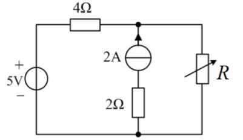
解答
2A 源与 2Ω 串联（读图确认）：该支路开路后 2Ω 随之消失。置零后端口电阻只剩 5V 短路后的 4Ω：。选 B。
复盘
电流源串的电阻对外无效，置零（开路）时连电阻一起消失——「串联看电流源」的另一面。
选 5（图 4.3）
开路电压 （ ）V。A. 5 B. 9 C. 6 D. 8
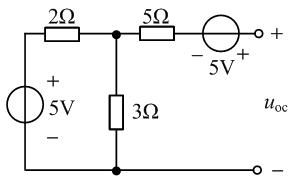
解答
左侧自成回路： A → 中点电位 V；输出端开路 → 5Ω 无压降， 右侧 5V（− 左 + 右）抬升 5 V：。选 D。
复盘
开路端「无电流、无压降」要跟「有源回路照常工作」同时用——左边环路照转，右边量空载电位。
选 6（图 4.4）
戴维南等效电路的参数为（ ）。A. 2V，2Ω B. 2V，1Ω C. 1V，1Ω D. 1V，2Ω
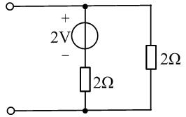
解答
V；。选 C。
复盘
最基础的分压 + 并联，戴维南两件套的第一课。
选 7（图 4.5）
戴维南等效电路的开路电压和等效电阻分别为（ ）。A. 1V，4Ω B. 1V，6Ω C. 5V，4Ω D. 5V，6Ω
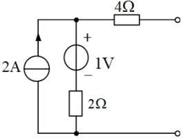
解答
开路时 4Ω 无电流，端口电压 = 顶节点电位：2A 全走 1V 串 2Ω 支路 → V， ；置零后 。选 D。
复盘
电流源驱动电阻链，端口开路时电流全部走内侧支路——先写电流流向，电位自然出来。
选 8（图 4.6）
戴维南等效电阻 （ ）。A. 0 Ω B. 2 Ω C. 3 Ω D. 5 Ω
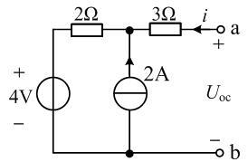
解答
置零：4V 短路（2Ω 保留）、2A 开路（支路断）。从 a 端： 串 = 。 选 D。
复盘
与选 4 对照：这里是电流源并联在节点上（无串联电阻随它消失），置零后 2Ω 保留。
4. 填空题
填 1（图 4.7）
戴维南等效电阻 ______Ω。
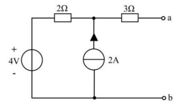
解答
置零后 （同选 8 结构）。
复盘
电流源开路、电压源短路，剩下纯电阻串并联。
填 2
含独立源的线性二端网络，依据戴维南定理可用一个电压源和电阻的______组合等效代替。
解答
串联。
复盘
对偶的诺顿定理是「电流源和电阻并联」——两句一起记。
填 3（图 4.8）
8V 单独作用 ____V；3A 单独作用 ____V；____V。
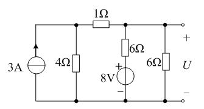
解答
按图：8V 单独作用时 V（右 6Ω 分压）；3A 单独作用时 V（3A 对分）； V。
复盘
叠加的两个分量分别算、代数和收口——负号分量也照加不误（本题恰好都为正）。
填 4（图 4.9）
图 (a) 中 V，图 (b) 短路电流 A。网络 N 在 AB 端的戴维南等效为______V 串______Ω。

解答
左侧化简： V 串 。 图 (a)：（N 电流 A）；图 (b)：短路电流 → 。联立：
复盘
两组端口条件联立解两个未知量——「实验法测戴维南」的题型化：开路（或已知负载）+ 短路， 两条方程两条方程地解。
填 5
叠加定理能算线性电路的电压、电流，但不能用在______的计算。
解答
功率（功率是电压或电流的二次量，不满足线性叠加）。
复盘
反例：两个源各使电阻产生 ？不——各自单独作用电流是 、，功率 里有交叉项 ，丢掉它就错。
填 6
开路电压 8V、短路电流 2A，接入 1Ω 负载，负载电流是______A。
解答
；。
复盘
「开路电压 / 短路电流」是测内阻的实验法，接负载就是一条除法。
填 7（图 4.10）
时 A； 时 为____A； 为____Ω 时最大功率，最大功率____W。
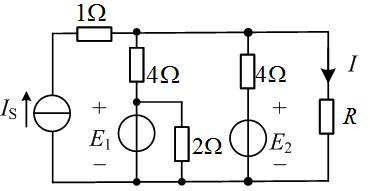
解答
按图求出 V、。： → ；最大功率条件 ：
复盘
一次戴维南等效换三次问答——先把网络收成 串 ，后面全是代入。
填 8（图 4.11）
戴维南等效电阻 ______Ω。
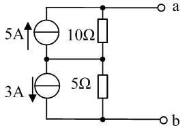
解答
置零：5A 开路剩 10Ω、3A 开路剩 5Ω，两段串联：。
复盘
串联结构里每个「电流源∥电阻」单元置零后只剩电阻，直接相加。
5. 计算题
计 1（图 4.12）
试用叠加定理求 。
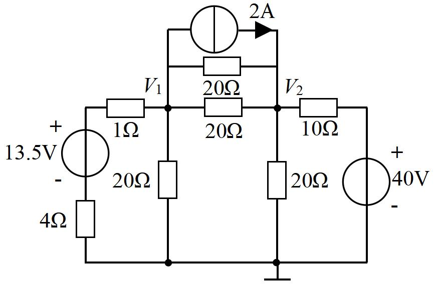
解答
节点方程（两源同时）：、，解得 V、 V； 按图中标注位置由 、 组合读出。
复盘
⚠ 原图电源读作 13.5 V 时解为分数（若为 14 V 则 V、 V，更像教材意图）； 且 的标注位置两轮读图未定——本题挂待核对，请对教材图确认电源值与 位置后再取值。
计 2（图 4.13）
求电路的戴维南等效电路。
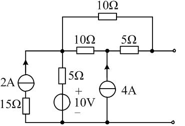
解答
开路电压：中节点 M 流入净电流 6 A（2A 与 4A 叠加）， → V； 开路端无电流 → V。置零：（10Ω 长跨被 M 分段后两侧各 5Ω 并联无效—— 按图读数为两条 5Ω 串联路径）。 V、。
复盘
戴维南两步的顺序固定：先开路电压（源照常工作），再置零求电阻（源全部消失）。
计 3（图 4.14）
求电路的戴维南等效电路。
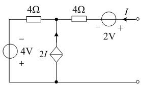
解答
按图读数（4V 为上 − 下 +、受控源 2I 箭头向上、 为流出端口电流）：端口电压恒为 V 且受控源恰好抵消全部内阻贡献，。等效为 −2 V 理想电压源（）。
复盘
⚠ 若 4V 极性读为上 + 下 −，则 V（ 仍为 0）。 的来源：受控源的值 随端口电流变化，恰好把其余电阻全部「补」掉——含受控源电路的等效电阻可以为零甚至为负。
计 4（图 4.15）
图 (a) 中 V；端口短路（图 b）时 A。求网络 N 在 AB 端的戴维南等效电路。
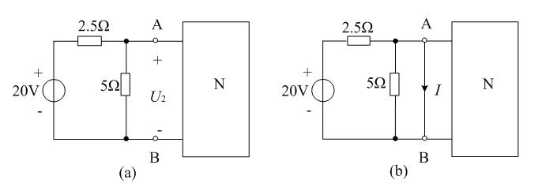
解答
与填 4 同题（数值相同）： V 串 。左侧电路化简为 V 串 ，两组端口条件联立（见填 4 解答）。
复盘
填空版与计算版同题——先做填空，计算题就是多写两行方程。
计 5（图 4.16）
R 为多大时吸收功率最大？最大功率是多少？
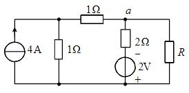
解答
V（节点方程：4A 与 2V 共同作用下 a 点电位 1 V）；。
复盘
最大功率三步：戴维南 → → 。公式里的 、 都是 「除负载外」的一端口参数。
6. 小结
第四章四件事：置零规则（电压源短路、电流源开路，受控源保留）、戴维南两步 （开路电压 + 置零电阻，含受控源只能外施电源法）、实验法（两组端口条件联立）、 最大功率（、）。功率不叠加（填 5）是叠加定理唯一的「不能」。
完成边界
- 已整理：第四章 21 题题面逐字转抄 + 配图 16 张入库；全部解答与复盘。
- 双签：2026-09-28，独立子代理只拿题目页重算 21 题：19 题一致，2 处修正整理者初解 （选 4 的 ——2A 与 2Ω 串联、置零后一起消失；填 4 的 联立补上 N 侧 对短路电流的贡献）。
- 〔待核对〕：① 计 1 电源值（13.5 V 读数疑为 14 V）与 标注位置；② 计 3 的 4V 极性 （上 − 下 + 则 V；上 + 下 − 则 +6 V）；③ 填 3 分量值按图复核。
- 未完成：第五至九章（分章推进中）。